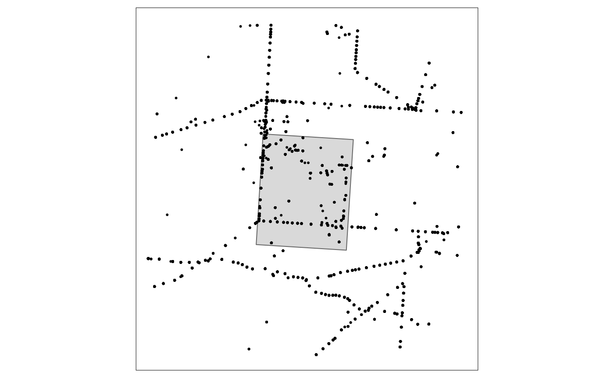

envClean
Department for Environment and Water
Nigel Willoughby
Tuesday, 02 November, 2021. 10:37
Source:vignettes/envClean.Rmd
envClean.Rmd
library(knitr)
#> Warning: package 'knitr' was built under R version 4.0.5
library(envClean)
library(envReport)
library(envFunc) # needed for add_raster_cell
library(fs)
#> Warning: package 'fs' was built under R version 4.0.5
library(purrr)
#> Warning: package 'purrr' was built under R version 4.0.5
library(dplyr)
#> Warning: package 'dplyr' was built under R version 4.0.5
#>
#> Attaching package: 'dplyr'
#> The following objects are masked from 'package:stats':
#>
#> filter, lag
#> The following objects are masked from 'package:base':
#>
#> intersect, setdiff, setequal, union
library(sf)
#> Warning: package 'sf' was built under R version 4.0.5
#> Linking to GEOS 3.9.0, GDAL 3.2.1, PROJ 7.2.1
library(tibble)
#> Warning: package 'tibble' was built under R version 4.0.5
library(tmap)
#> Warning: package 'tmap' was built under R version 4.0.5
library(raster)
#> Warning: package 'raster' was built under R version 4.0.5
#> Loading required package: sp
#> Warning: package 'sp' was built under R version 4.0.5
#>
#> Attaching package: 'raster'
#> The following object is masked from 'package:dplyr':
#>
#> select
library(rstanarm)
#> Warning: package 'rstanarm' was built under R version 4.0.5
#> Loading required package: Rcpp
#> Warning: package 'Rcpp' was built under R version 4.0.5
#> This is rstanarm version 2.21.1
#> - See https://mc-stan.org/rstanarm/articles/priors for changes to default priors!
#> - Default priors may change, so it's safest to specify priors, even if equivalent to the defaults.
#> - For execution on a local, multicore CPU with excess RAM we recommend calling
#> options(mc.cores = parallel::detectCores())
fix_bib(bib_file = "vignettes/packages.bib")
#> Warning: `as_data_frame()` was deprecated in tibble 2.0.0.
#> Please use `as_tibble()` instead.
#> The signature and semantics have changed, see `?as_tibble`.
#> # A tibble: 13 x 28
#> CATEGORY BIBTEXKEY ADDRESS ANNOTE AUTHOR BOOKTITLE CHAPTER CROSSREF EDITION
#> <chr> <chr> <chr> <chr> <list> <chr> <chr> <chr> <chr>
#> 1 MANUAL R-base Vienna,~ <NA> <chr ~ <NA> <NA> <NA> <NA>
#> 2 MANUAL R-envClean <NA> <NA> <chr ~ <NA> <NA> <NA> <NA>
#> 3 MANUAL R-envFunc <NA> <NA> <chr ~ <NA> <NA> <NA> <NA>
#> 4 MANUAL R-envRepo~ <NA> <NA> <chr ~ <NA> <NA> <NA> <NA>
#> 5 MANUAL R-raster <NA> <NA> <chr ~ <NA> <NA> <NA> <NA>
#> 6 MANUAL R-sf <NA> <NA> <chr ~ <NA> <NA> <NA> <NA>
#> 7 MANUAL R-sp <NA> <NA> <chr ~ <NA> <NA> <NA> <NA>
#> 8 MANUAL R-tibble <NA> <NA> <chr ~ <NA> <NA> <NA> <NA>
#> 9 MANUAL R-tmap <NA> <NA> <chr ~ <NA> <NA> <NA> <NA>
#> 10 ARTICLE sf2018 <NA> <NA> <chr ~ <NA> <NA> <NA> <NA>
#> 11 ARTICLE sp2005 <NA> <NA> <chr ~ <NA> <NA> <NA> <NA>
#> 12 BOOK sp2013 <NA> <NA> <chr ~ <NA> <NA> <NA> <NA>
#> 13 ARTICLE tmap2018 <NA> <NA> <chr ~ <NA> <NA> <NA> <NA>
#> # ... with 19 more variables: EDITOR <list>, HOWPUBLISHED <chr>,
#> # INSTITUTION <chr>, JOURNAL <chr>, KEY <chr>, MONTH <chr>, NOTE <chr>,
#> # NUMBER <chr>, ORGANIZATION <chr>, PAGES <chr>, PUBLISHER <chr>,
#> # SCHOOL <chr>, SERIES <chr>, TITLE <chr>, TYPE <chr>, VOLUME <chr>,
#> # YEAR <chr>, URL <chr>, DOI <chr>
tmap_mode("plot")
#> tmap mode set to plotting
flor_all <- tibble::as_tibble(flor_all)
# What crs to use for maps?
use_crs <- 3577 # actually an epsg code. see epsg.io
aoi <- aoi %>%
sf::st_transform(crs = use_crs)
Get envClean
envClean is not on CRAN.
Install the development version from GitHub
remotes::install_github("acanthiza/envClean")Load envClean
Suggested workflow
After many, many iterations, the following workflow has been found to be ok. Only ok. There is no awesome when cleaning large, unstructured data.
Import
Querying and uniting disparate data sources into a single data set is a challenge in its own right. See envImport for tools to assist there. Once you’ve imported and combined all your data, read on.
Here, we’ll start with combined floristic data (called flor_all) from the mallee in South Australia. This data set is provided with envClean.
flor_all
#> # A tibble: 13,104 x 13
#> lat long data_name site date original_name cover cover_code quad_x
#> <dbl> <dbl> <fct> <chr> <date> <chr> <dbl> <chr> <dbl>
#> 1 -34.5 140. BCM -2110~ 2013-01-23 Eucalyptus p~ NA <NA> 20
#> 2 -34.5 140. BCM -2110~ 2013-01-23 Triodia irri~ NA <NA> 20
#> 3 -34.5 140. BCM -2110~ 2013-01-23 Carpobrotus ~ NA <NA> 20
#> 4 -34.5 140. BCM -2110~ 2013-01-23 Geijera line~ NA <NA> 20
#> 5 -34.5 140. BCM -2110~ 2013-01-23 Sclerolaena ~ NA <NA> 20
#> 6 -34.5 140. BCM -2110~ 2013-01-23 Eucalyptus o~ NA <NA> 20
#> 7 -34.5 140. BCM -2110~ 2013-01-23 Sisymbrium i~ NA <NA> 20
#> 8 -34.5 140. BCM -5177~ 2006-09-10 Olearia pime~ NA <NA> 30
#> 9 -34.5 140. BCM -5177~ 2006-09-10 Eucalyptus o~ NA <NA> 30
#> 10 -34.5 140. BCM -5177~ 2006-09-10 Eucalyptus g~ NA <NA> 30
#> # ... with 13,094 more rows, and 4 more variables: quad_y <dbl>,
#> # rel_dist <dbl>, month <dbl>, year <dbl>Note on coordinate reference systems
There are two (possibly three) main coordinate reference systems (crs) to worry about:
- the crs for the original records. If these are in decimal degrees, using epsg = 4283 is likely to return the correct crs.
- the crs you’d like to use for most spatial data. Set here (in setup chunk) to
use_crs= 3577. It is likely that a projected crs will work best, particularly for buffering, filtering etc. - the crs for any other spatial data imported to help with cleaning. Try using
sf::st_read("random_shape_file.shp") %>% sf::st_tranform(crs = use_crs)to deal with this.
Area of interest
Usually this is a geographic and/or taxonomic area of interest. An example area overlapping flor_all is provided in aoi. Converting flor_all to sf allows plotting them together.
flor_all_sf <- flor_all %>%
sf::st_as_sf(coords = c("long", "lat")
, crs = 4326
)
tm_shape(aoi
, bbox = st_bbox(flor_all_sf)
) +
tm_polygons() +
tm_shape(flor_all_sf) +
tm_dots()
Filtering flor_all to aoi is done with filter_aoi.
flor_aoi <- filter_aoi(flor_all
, use_aoi = aoi
, crs_aoi = st_crs(aoi)
) %>%
add_time_stamp()
#> Joining, by = c("lat", "long")
flor_aoi
#> # A tibble: 3,485 x 13
#> lat long data_name site date original_name cover cover_code quad_x
#> <dbl> <dbl> <fct> <chr> <date> <chr> <dbl> <chr> <dbl>
#> 1 -34.5 140. BCM -5177~ 2006-09-10 Olearia pime~ NA <NA> 30
#> 2 -34.5 140. BCM -5177~ 2006-09-10 Eucalyptus o~ NA <NA> 30
#> 3 -34.5 140. BCM -5177~ 2006-09-10 Eucalyptus g~ NA <NA> 30
#> 4 -34.5 140. BCM -5177~ 2006-09-10 Maireana tri~ NA <NA> 30
#> 5 -34.5 140. BCM -5177~ 2006-09-10 Maireana pen~ NA <NA> 30
#> 6 -34.5 140. BCM -5177~ 2006-09-10 Santalum mur~ NA <NA> 30
#> 7 -34.5 140. BCM -5177~ 2006-09-10 Rhagodia cra~ NA <NA> 30
#> 8 -34.5 140. BCM -5177~ 2006-09-10 Eremophila g~ NA <NA> 30
#> 9 -34.5 140. BCM -5177~ 2006-09-10 Geijera line~ NA <NA> 30
#> 10 -34.5 140. BCM -5177~ 2006-09-10 Maireana eri~ NA <NA> 30
#> # ... with 3,475 more rows, and 4 more variables: quad_y <dbl>, rel_dist <dbl>,
#> # month <dbl>, year <dbl>Check that spatial filter worked.
flor_aoi_sf <- flor_aoi %>%
sf::st_as_sf(coords = c("long", "lat")
, crs = 4326
)
tm_shape(aoi
, bbox = st_bbox(flor_all_sf)
) +
tm_polygons() +
tm_shape(flor_aoi_sf) +
tm_dots()
Context: scales of interest
There are two scales of particular interest: space (location) and time. Together these are used to set the context throughout filtering and analysis. It is possible to assign other concepts to context too (e.g. say, data source). Note that context is first applied exclusively only when taxonomy is filtered. For example, if sppA has a record at location x and time y from different data sources (see table below) these will only be reduced to a single ‘record’ when taxonomy is filtered. Another way to say this: extraneous fields/columns beyond context are maintained until taxonomy is filtered. However, even at that point, extra columns can be specified (see Filter taxonomy).
The original location columns probably suggest metre accuracy, or even sub-metre. There may also be a field dampening expectations of such accuracy with estimates of precision for the location. In the following workflow, a precision threshold is set and then an accuracy threshold is adopted. All records with worse precision than threshold are removed, and then all records within the accuracy threshold are lumped. The lumping is done via a raster placed over the aoi.
The original time scale probably suggests accuracy to day, or perhaps even hour, or sub-hour. Choose a scale of relevance to your question. In the example below month is used. Thus all data recorded within a spatial location within a month are treated as one ‘visit’. A ‘taxa’ within a ‘visit’ is considered a ‘record’.
| data_source | taxa | location | year |
|---|---|---|---|
| A | sppA | x | y |
| B | sppA | x | y |
Precision
Records with precision less than threshold are filtered using filter_spat_rel. This takes a dataframe (df) as its first argument, in this case flor_aoi. dist_col specifies the column in df that contains the precision estimates. dist provides the threshold above which to filter. If there are data sources (or any other columns in df) that do not include an estimate of spatial precision, but you would like to keep, this can be done with the argument over_ride. This takes a named list, where names need to match the columns in df. Any levels within the columns provided in over_ride will not be filtered, irrespective of the values in dist_col.
context <- c("year", "month", "lat", "long", "cell")
include_data_name <- c("ALIS","BCM","NVB","TERN")
flor_rel <- filter_spat_rel(flor_aoi
, dist_col = "rel_dist"
, dist = 100
, context = context
, over_ride = list(data_name = include_data_name)
) %>%
add_time_stamp()
#> Joining, by = c("lat", "long", "month", "year")
flor_rel
#> # A tibble: 2,332 x 13
#> lat long data_name site date original_name cover cover_code quad_x
#> <dbl> <dbl> <fct> <chr> <date> <chr> <dbl> <chr> <dbl>
#> 1 -34.5 140. BCM -5177~ 2006-09-10 Olearia pime~ NA <NA> 30
#> 2 -34.5 140. BCM -5177~ 2006-09-10 Eucalyptus o~ NA <NA> 30
#> 3 -34.5 140. BCM -5177~ 2006-09-10 Eucalyptus g~ NA <NA> 30
#> 4 -34.5 140. BCM -5177~ 2006-09-10 Maireana tri~ NA <NA> 30
#> 5 -34.5 140. BCM -5177~ 2006-09-10 Maireana pen~ NA <NA> 30
#> 6 -34.5 140. BCM -5177~ 2006-09-10 Santalum mur~ NA <NA> 30
#> 7 -34.5 140. BCM -5177~ 2006-09-10 Rhagodia cra~ NA <NA> 30
#> 8 -34.5 140. BCM -5177~ 2006-09-10 Eremophila g~ NA <NA> 30
#> 9 -34.5 140. BCM -5177~ 2006-09-10 Geijera line~ NA <NA> 30
#> 10 -34.5 140. BCM -5177~ 2006-09-10 Maireana eri~ NA <NA> 30
#> # ... with 2,322 more rows, and 4 more variables: quad_y <dbl>, rel_dist <dbl>,
#> # month <dbl>, year <dbl>Rasterize
Now that records with dubious spatial precision have been removed, an accuracy threshold is adpoted by rasterizing remaining records into the cells of aoi_raster, created here.
aoi_raster <- raster(ext = round(extent(aoi), -3)
, resolution = 30
, crs = CRS(paste0("+init=epsg:",use_crs))
)
#> Warning in showSRID(uprojargs, format = "PROJ", multiline = "NO", prefer_proj
#> = prefer_proj): Discarded datum Geocentric_Datum_of_Australia_1994 in Proj4
#> definition
aoi_raster
#> class : RasterLayer
#> dimensions : 367, 300, 110100 (nrow, ncol, ncell)
#> resolution : 30, 30 (x, y)
#> extent : 723000, 732000, -3800010, -3789000 (xmin, xmax, ymin, ymax)
#> crs : +proj=aea +lat_0=0 +lon_0=132 +lat_1=-18 +lat_2=-36 +x_0=0 +y_0=0 +ellps=GRS80 +units=m +no_defsRasterizing the current data is then done via add_raster_cell. This function has the argument add_xy which will add the centroid of the cell back to the data frame using the same names as the original x and y columns. Alternatively, the x and y columns will be lost from the returned data frame, replaced with cell, the raster cell id.
flor_cell <- add_raster_cell(aoi_raster
, flor_rel
, add_xy = TRUE
, crs_df = 4283
) %>%
add_time_stamp()
#> Joining, by = c("old_y", "old_x")
flor_cell
#> # A tibble: 2,330 x 14
#> cell long lat data_name site date original_name cover cover_code
#> <int> <dbl> <dbl> <fct> <chr> <date> <chr> <dbl> <chr>
#> 1 7040 140. -34.5 EGIS SUP29~ 2006-10-18 Westringia ri~ NA <NA>
#> 2 7040 140. -34.5 EGIS SUP29~ 2006-10-18 Maireana tric~ NA <NA>
#> 3 7040 140. -34.5 EGIS SUP29~ 2006-10-18 Maireana pent~ NA <NA>
#> 4 7040 140. -34.5 EGIS SUP29~ 2006-10-18 Olearia muell~ NA <NA>
#> 5 7040 140. -34.5 EGIS SUP29~ 2006-10-18 Geijera linea~ NA <NA>
#> 6 7040 140. -34.5 EGIS SUP29~ 2006-10-18 Halgania andr~ NA <NA>
#> 7 7040 140. -34.5 EGIS SUP29~ 2006-10-18 Rhagodia cras~ NA <NA>
#> 8 7040 140. -34.5 EGIS SUP29~ 2006-10-18 Ptilotus semi~ NA <NA>
#> 9 7040 140. -34.5 EGIS SUP29~ 2006-10-18 Austrostipa a~ NA <NA>
#> 10 7040 140. -34.5 EGIS SUP29~ 2006-10-18 Eucalyptus gr~ NA <NA>
#> # ... with 2,320 more rows, and 5 more variables: quad_x <dbl>, quad_y <dbl>,
#> # rel_dist <dbl>, month <dbl>, year <dbl>Taxonomy
Make taxonomy
Historically, reconciling taxonomy has been by far the most time-consuming, and necessarily expert-driven part of cleaning biological data from any unstructured data set(s). In the past it was often necessary to get an expert botanist to generate an analysis specific taxonomy, taking into account such things as the area of interest, timing (e.g. decade (was it a wet decade), season (was the timing right for orchids or not?)) of the of the main previous surveys, and even possibly the expertise-at-survey-time of the observers. Nothing will replace the quality of the results from such a process. Using online taxonomic tools such as the GBIF taxonomy backbone provides an automated alternative that comes with an unquantified (but unlikely to be negligible) penalty in quality. However, the enormous benefit in flexibility and time provided by automated tools makes them essential in practice.
Reconciling taxonomy can be done with the make_taxa_taxonomy function. This creates two objects that are loaded to the global environment:
-
lutaxa.This is a simple lookup from the original name provided to the taxa to use in place of that name. Thus,taxais likely to be duplicated -
taxa_taxonomyprovides the full taxonomic hierarchy for eachtaxain thelutaxaobject. The columntaxashould not have any duplicates. The output can also include lifespan and indigenous status columns, if they are available from any of the original data sources and they are provided tomake_taxa_taxonomy.
make_taxa_taxonomy(flor_cell
, save_luGBIF = path("vignettes","luGBIF.feather")
)
#> Loading required namespace: feather
#> Joining, by = "original_name"
#> Joining, by = c("taxa", "kingdom", "phylum", "order", "family", "genus", "species", "class")lutaxa is returned to the global environment.
lutaxa
#> # A tibble: 352 x 3
#> original_name taxa rank
#> <chr> <chr> <ord>
#> 1 Zygophyllum aurantiacum (NC) Roepera aurantiaca subspecies
#> 2 Westringia rigida Westringia rigida species
#> 3 Westringia rigida R.Br. Westringia rigida species
#> 4 Wahlenbergia luteola Wahlenbergia luteola species
#> 5 Wahlenbergia luteola P.J.Sm. Wahlenbergia luteola species
#> 6 Vulpia myuros f. myuros Vulpia myuros species
#> 7 Vulpia muralis Vulpia muralis species
#> 8 Vulpia muralis (Kunth) Nees Vulpia muralis species
#> 9 Vittadinia megacephala Vittadinia megacephala species
#> 10 Vittadinia megacephala (Benth.) J.M.Black Vittadinia megacephala species
#> # ... with 342 more rowsas is taxa_taxonomy
taxa_taxonomy
#> # A tibble: 195 x 8
#> taxa kingdom phylum order family genus species class
#> <chr> <chr> <chr> <chr> <chr> <chr> <chr> <chr>
#> 1 Roepera aurantiaca Plantae Trache~ Zygop~ Zygoph~ Roepe~ Roepera ~ Magn~
#> 2 Westringia rigida Plantae Trache~ Lamia~ Lamiac~ Westr~ Westring~ Magn~
#> 3 Wahlenbergia luteola Plantae Trache~ Aster~ Campan~ Wahle~ Wahlenbe~ Magn~
#> 4 Vulpia myuros Plantae Trache~ Poales Poaceae Vulpia Vulpia m~ Lili~
#> 5 Vulpia muralis Plantae Trache~ Poales Poaceae Vulpia Vulpia m~ Lili~
#> 6 Vittadinia megacephala Plantae Trache~ Aster~ Astera~ Vitta~ Vittadin~ Magn~
#> 7 Vittadinia gracilis Plantae Trache~ Aster~ Astera~ Vitta~ Vittadin~ Magn~
#> 8 Vittadinia dissecta Plantae Trache~ Aster~ Astera~ Vitta~ Vittadin~ Magn~
#> 9 Vittadinia cuneata Plantae Trache~ Aster~ Astera~ Vitta~ Vittadin~ Magn~
#> 10 Vittadinia cervicularis Plantae Trache~ Aster~ Astera~ Vitta~ Vittadin~ Magn~
#> # ... with 185 more rowsFilter taxonomy
Cleaning to a single taxonomy is now possible sing lutaxa and taxa_taxonomy. At this point, the context is also exclusively applied. Thus the output of applying filter_taxa is to generate a single record for each taxa within each context, with a single field-based result for any extra_cols provided to filter_taxa. Likewise, by providing do_cov and lucov to filter_taxa, a single, field-based estimate of cover is generated for each ‘record’.
flor_taxa <- filter_taxa(flor_cell
, taxa_col = "original_name"
, context = context
, do_cov = TRUE
, lucov = envEcosystems::lucover
) %>%
add_time_stamp()
#> Joining, by = "original_name"
#> Joining, by = "taxa"
#> Joining, by = "original_name"
#> Joining, by = "cover_code"
#> Joining, by = c("year", "month", "lat", "long", "cell", "taxa")
flor_taxa
#> # A tibble: 860 x 7
#> year month lat long cell taxa use_cover
#> <dbl> <dbl> <dbl> <dbl> <int> <chr> <dbl>
#> 1 2006 10 -34.5 140. 7040 Westringia rigida 0.015
#> 2 2006 10 -34.5 140. 12659 Westringia rigida 0.01
#> 3 1990 5 -34.5 140. 18098 Westringia rigida 0.015
#> 4 1990 5 -34.5 140. 18722 Westringia rigida 0.015
#> 5 1990 5 -34.5 140. 19039 Westringia rigida 0.015
#> 6 2006 10 -34.5 140. 19307 Westringia rigida 0.01
#> 7 1990 6 -34.5 140. 34485 Westringia rigida 0.015
#> 8 2006 10 -34.5 140. 37110 Westringia rigida 0.015
#> 9 1990 4 -34.5 140. 37110 Westringia rigida 0.015
#> 10 1990 4 -34.5 140. 39212 Westringia rigida 0.015
#> # ... with 850 more rowsSingletons
An implicit assumption in collation of data sources is usually that records were a list of taxa collected at a specific spatial location (and date). In many cases this assumption proves incorrect. For example, records may be related to, say, tree health monitoring where no other taxa were concurrently recorded.
Thus, filtering ‘singleton’ sites (a site with only a single taxa was recorded) is often prudent.
This will also inadvertently filter legitimate single taxa lists. For example, some areas of samphire or mangroves may have only a single taxa recorded within a survey site. As always, it depends on the goal of any particular analysis whether this trade-off will be worthwhile.
flor_single <- filter_counts(flor_taxa
, context = context
, thresh = 1
) %>%
add_time_stamp()
flor_single
#> # A tibble: 853 x 7
#> year month lat long cell taxa use_cover
#> <dbl> <dbl> <dbl> <dbl> <int> <chr> <dbl>
#> 1 2006 10 -34.5 140. 7040 Westringia rigida 0.015
#> 2 2006 10 -34.5 140. 12659 Westringia rigida 0.01
#> 3 1990 5 -34.5 140. 18098 Westringia rigida 0.015
#> 4 1990 5 -34.5 140. 18722 Westringia rigida 0.015
#> 5 1990 5 -34.5 140. 19039 Westringia rigida 0.015
#> 6 2006 10 -34.5 140. 19307 Westringia rigida 0.01
#> 7 1990 6 -34.5 140. 34485 Westringia rigida 0.015
#> 8 2006 10 -34.5 140. 37110 Westringia rigida 0.015
#> 9 1990 4 -34.5 140. 37110 Westringia rigida 0.015
#> 10 1990 4 -34.5 140. 39212 Westringia rigida 0.015
#> # ... with 843 more rowsEffort
Aggregated data sets are likely to contain records of taxa at spatial locations collected by almost any method imaginable. The effort any observer(s) put into time and taxonomy at each spatial location is usually unknown.
Given that effort matters when documenting ecology (e.g. Wiens 1989), filtering ‘effort’ is an attempt to remove the most seriously under- and over-sampled contexts.
Examples of low taxa richness contexts that may occur in large, unstructured data sets:
- brief, opportune records
- tree-health monitoring data
Examples of high taxa richness contexts that may occur in large, unstructured data sets:
- an observer wandering widely from the location they recorded, particularly if crossing an ecotone
- several observers working together
- an observer with well above average botanical knowledge
- observations taken over a long time-frame but recorded on a single day
These examples just scratch the surface of the ways in which taxa richness can deviate from that expected from an average effort by an average observer.
Taxa richness can be modelled as a function of any variables of interest, for example:
- nothing. This option might be useful in relatively small areas where the non-biological drivers of biological change are relatively stable
- a continuous variable of interest. Say, annual mean temperature, or, soil ph
- principal components. This option is best suited to analyses accompanied by many variables all of which are drivers, or closely correlated with, biological change
- a categorical variable of interest. Say, IBRA Subregions
Effort is filtered using the filter_effort function. This models taxa richness using a Bayesian generalised linear model implemented by the rstan_glm function in the rstanarm [(???)] package. The model is used to predict upper and lower bounds for taxa richness. Any cell with taxa richness outside those bounds can be removed, by setting the acceptable lower and upper percentiles.
# effort_mod <- make_effort_mod(flor_single
# , context = context
# )
#
# flor_effort <- flor_single %>%
# dplyr::inner_join(effort_mod$mod_cell_result %>%
# dplyr::filter(keep)
# )
#
# flor_effortFiltering summary
filt_summary <- ls(pattern = "flor_") %>%
grep("combine|all|wide|sf", ., value = TRUE, invert = TRUE) %>%
tibble::enframe(name = NULL, value = "name") %>%
dplyr::mutate(obj = map(name,get)
, has_stamp = map_lgl(obj,~"ctime" %in% names(attributes(.)))
) %>%
dplyr::filter(has_stamp) %>%
dplyr::mutate(nrow = map_dbl(obj, nrow)) %>%
dplyr::mutate(ctime = map(obj,attr,"ctime")) %>%
tidyr::unnest(cols = c(ctime)) %>%
dplyr::arrange(desc(nrow),ctime)